Every frame is one self-contained page — no frameworks, no stock photos, each in its own visual language. The ones circled in grease pencil are tools meant for daily use; the rest are here to be looked at.
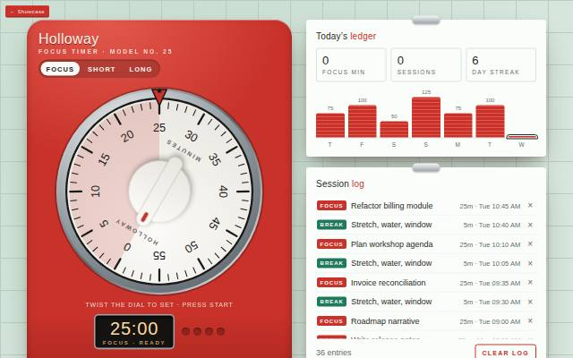
keep Holloway Focus TimerToolsA pomodoro focus timer built like an enamel kitchen appliance: twist the big dial to set minutes, run focus and break cycles, hear a real bell chime and keep a session log.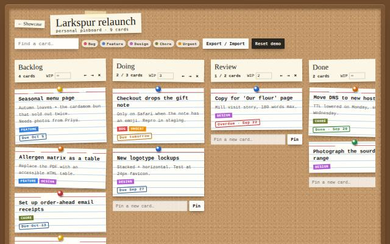
keep Pinboard KanbanToolsA personal kanban board on real-feeling cork: pin index cards into columns, drag them by mouse or touch, add labels, due dates and WIP limits, and export or import the whole board as JSON.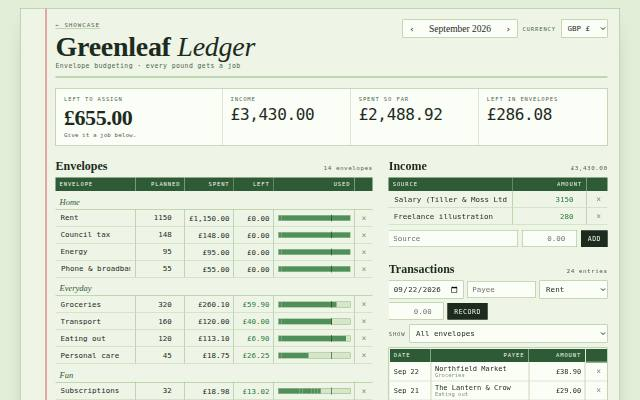
keep Greenleaf LedgerToolsA monthly envelope budget on green accountant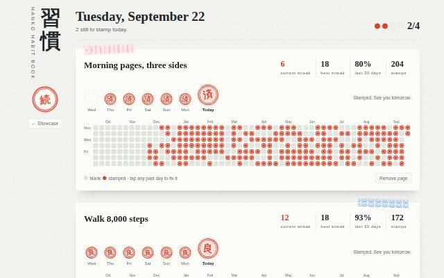
keep Hanko Habit BookToolsA habit tracker styled like Japanese stationery: stamp each day with a vermilion hanko, watch a year of stamps build a heatmap, and keep your streaks alive.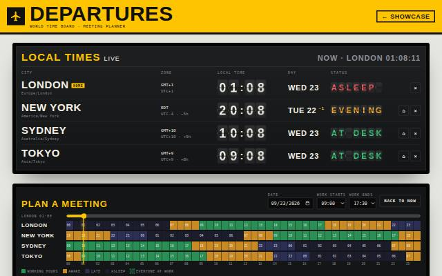
keep Departures Time BoardToolsA world-clock meeting planner drawn as an airport split-flap departure board: add cities, scrub a time slider to see everyone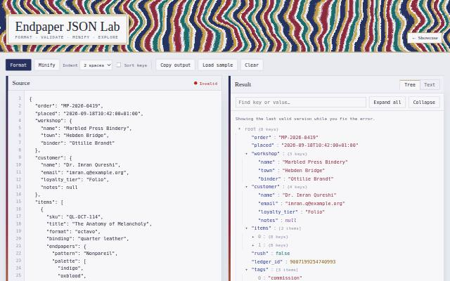
keep Endpaper JSON LabToolsA JSON formatter, validator and minifier with a bookbinder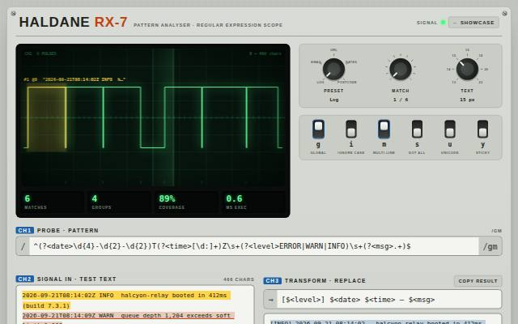
keep Haldane Regex ScopeToolsA live regular-expression tester built like a bench oscilloscope: flag toggle switches, rotary knobs, a phosphor trace of every match, capture group readouts and a replace preview.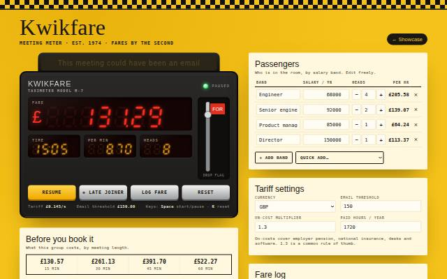
keep Kwikfare Meeting MeterToolsA 1970s taxi meter for meetings: set who is in the room by salary band, drop the flag and watch the fare tick up in red LED digits until it could have been an email.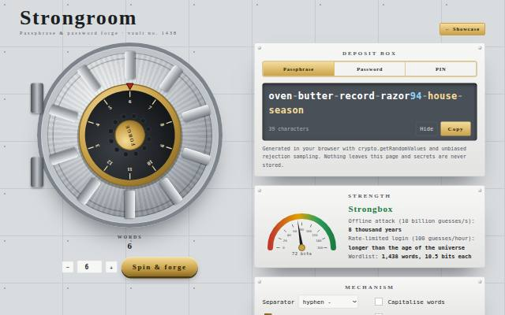
keep Strongroom Passphrase ForgeToolsA password and passphrase generator built like a bank vault door: spin the combination dial to set length, get cryptographically random passphrases from a built-in wordlist, and read their real entropy.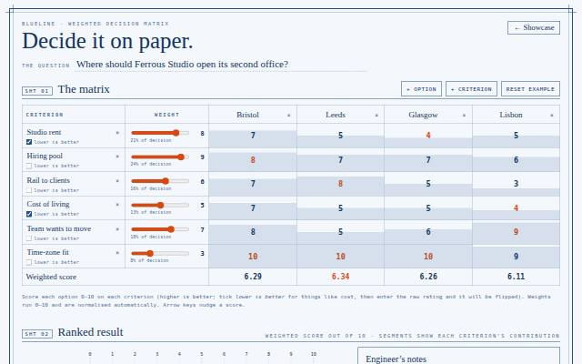
keep Blueline Decision MatrixToolsA weighted decision matrix drawn as an architect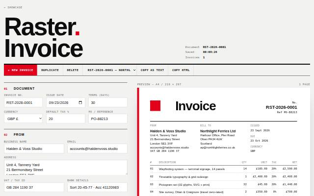
keep Raster Invoice StudioToolsA Swiss-grid invoice builder with line items, per-line tax, discounts, multi-currency, auto numbering and a live A4 preview saved in your browser.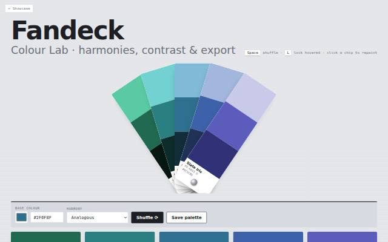
keep Fandeck Colour LabToolsA paint-chip palette generator: harmonies from a base colour, lock and shuffle with the spacebar, a WCAG contrast matrix and CSS, JSON or Tailwind export.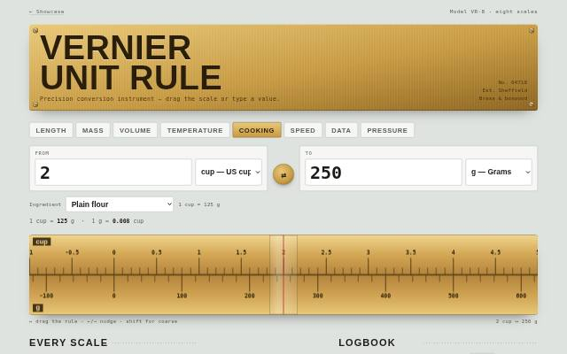
keep Vernier Unit RuleToolsA brass slide-rule unit converter for length, mass, volume, temperature, cooking ingredients, speed, data sizes and pressure, with a draggable scale and every-unit readout.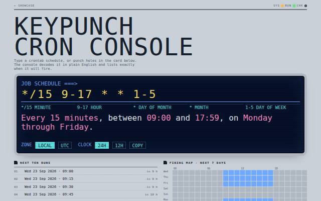
keep Keypunch Cron ConsoleToolsA cron expression builder and explainer: plain-English description, next ten run times, a weekly firing map and a punch-card field editor with presets and a saved job deck.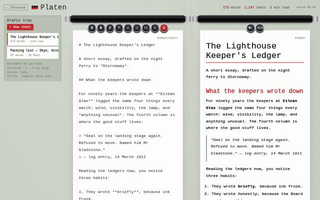
keep Platen Writing DeskToolsA typewriter-desk Markdown editor with live preview, word count, reading time, focus mode and an autosaved drafts tray.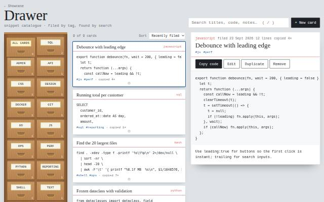
keep Drawer Snippet CatalogToolsA card-catalog snippet library: tag drawers, instant search, syntax highlighting, one-click copy and JSON import and export, stored in your browser.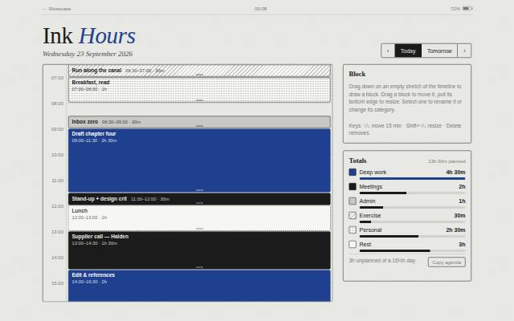
keep Ink Hours PlannerToolsA calm e-ink style time-block day planner: drag on a 24-hour timeline to create blocks, move and resize them, switch between today and tomorrow, and see totals by category.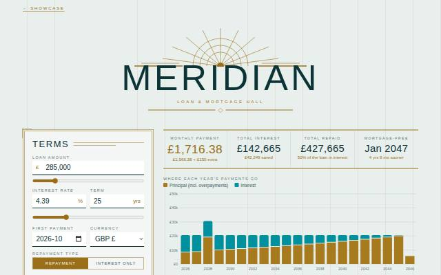
keep Meridian Loan HallToolsAn Art Deco mortgage and loan calculator with a full amortisation schedule, monthly and lump-sum overpayment scenarios, interest-versus-principal charts and saved comparisons.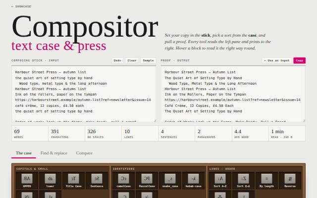
keep Compositor Text CaseToolsA letterpress type-case of text utilities: case transforms, slugify, counts, sort and dedupe lines, find and replace with regex, a two-text diff and Base64, URL and HTML encoding.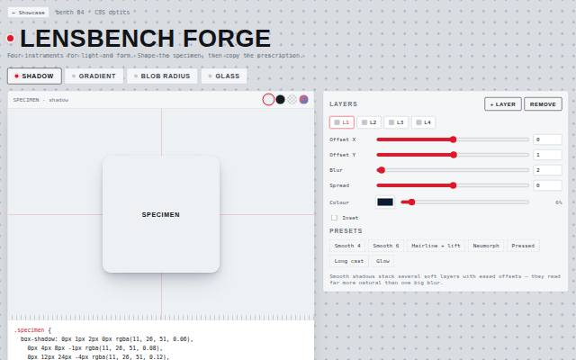
keep Lensbench CSS ForgeToolsAn optics-bench CSS generator for layered box-shadows, linear, radial and conic gradients, eight-point border-radius blobs and glassmorphism, with a live specimen and copyable code.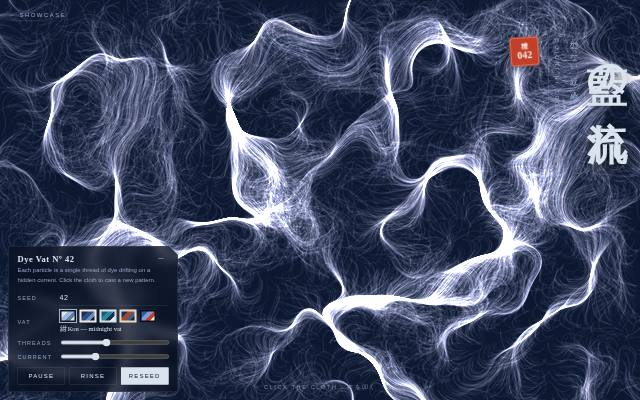
Aizome CurrentsGenerativeA simplex-noise flow field painter where thousands of particles lay down ink trails in the colours of Japanese indigo dyeing; click the cloth to reseed.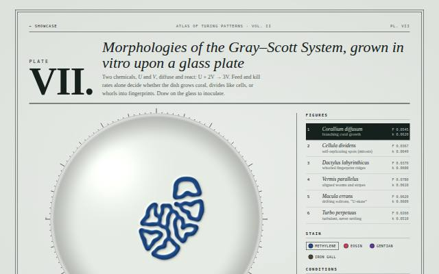
Morphogen Plate VIIGenerativeA living Gray–Scott reaction–diffusion specimen running on the GPU, presented as a stained laboratory plate you can paint into, with coral, mitosis and fingerprint presets.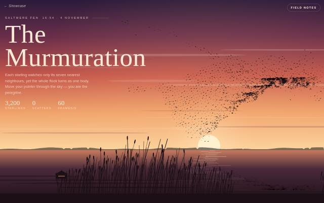
Saltmere MurmurationGenerativeThousands of simulated starlings wheel over a sunset fen in a live boids murmuration; your cursor is the peregrine that splits the flock.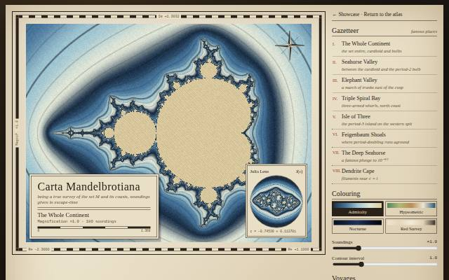
Carta MandelbrotianaGenerativeA deep-zoom Mandelbrot and Julia explorer drawn as an antique sea chart, with perturbation-theory GPU rendering, contour soundings, a Julia lens on hover and a gazetteer of famous places.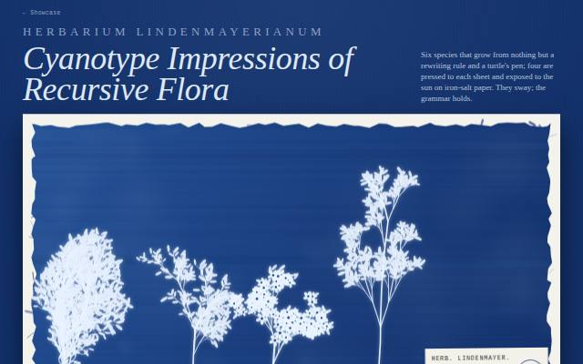
Herbarium LindenmayerianumGenerativeAn L-system botanical garden printed as a cyanotype herbarium sheet: recursive plants grow from their grammars, sway in the wind and carry typed Latin labels.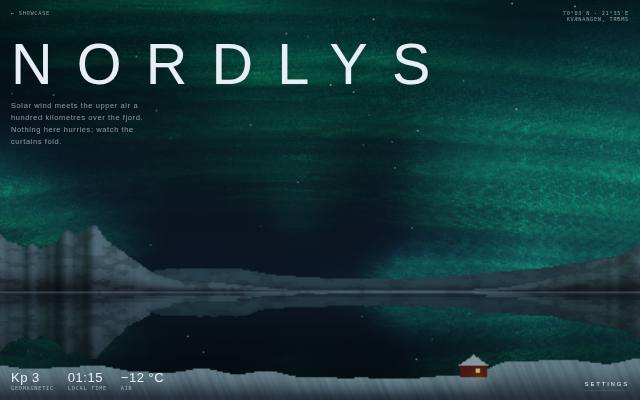
Nordlys Over KvænangenGenerativeA slow, shader-drawn aurora borealis over a snowbound fjord, with starlight, a red rorbu on the shore and the whole sky mirrored in still water.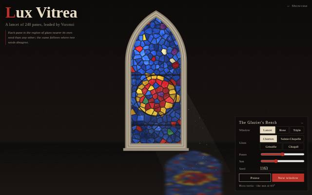
Lux VitreaGenerativeA generative Voronoi stained-glass window — lancet, rose or triple lancet — leaded in came and lit by a wandering sun that throws coloured light across a cathedral floor.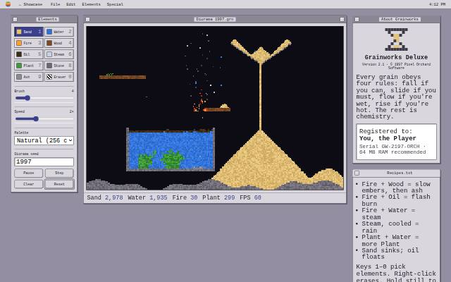
Grainworks DeluxeGenerativeA falling-sand toy in the style of a 1997 shareware app: pour sand, water, oil, fire, wood, steam and plants into a pixel diorama and watch them react.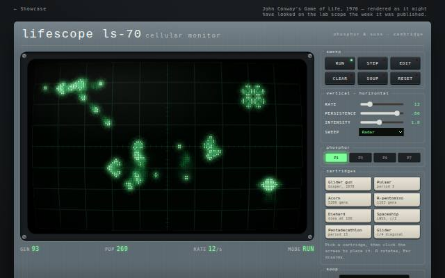
Lifescope LS-70GenerativeConway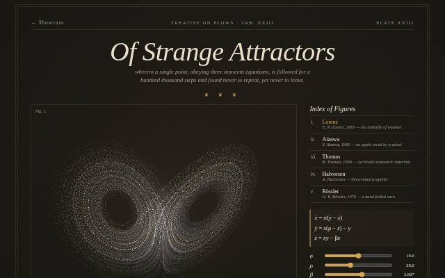
Of Strange AttractorsGenerativeLorenz, Aizawa, Thomas, Halvorsen and Rössler attractors drawn as rotating clouds of particle ink on a dark nineteenth-century mathematics plate, with live parameters and orbit controls.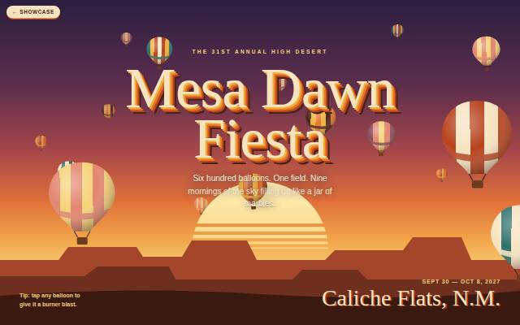
Mesa Dawn FiestaBrandsA 1970s-poster landing page for a fictional high-desert hot air balloon fiesta, with balloons drifting through a parallax dawn sky, a day-by-day schedule and an interactive launch field map.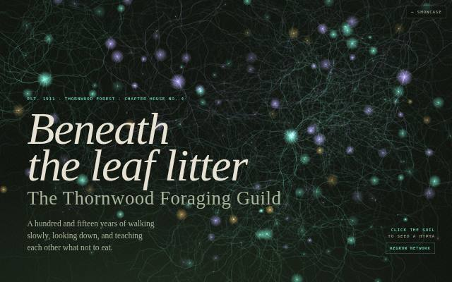
Thornwood Foraging GuildBrandsA dark forest-floor site for a fictional mushroom foraging guild, with a bioluminescent mycelium network you can seed by clicking, species cards with spore prints and a fruiting-season calendar.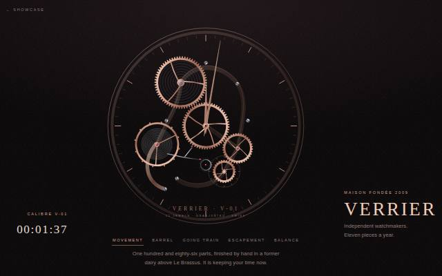
Verrier HorlogerieBrandsA black-velvet and rose-gold site for a fictional independent watchmaker, centred on a live skeleton movement whose gears, escapement and balance beat in real time and whose hands show the actual time.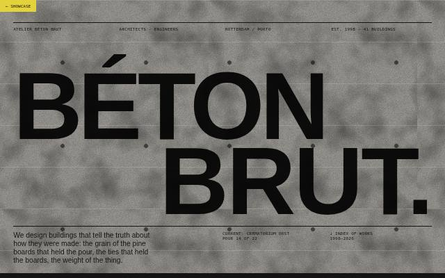
Atelier Béton BrutBrandsA brutalist architecture practice site in raw board-marked concrete, with massive type and a project index whose rows reveal generated axonometric drawings on hover.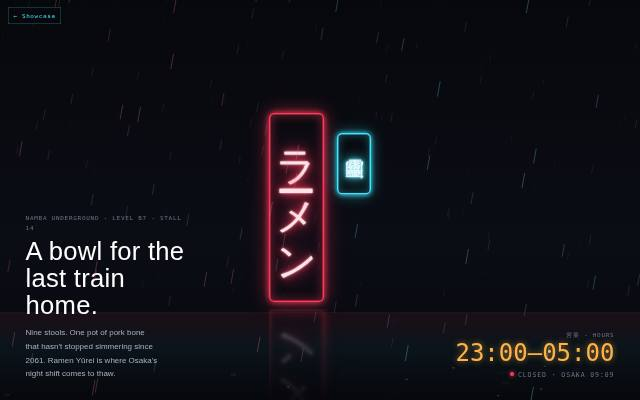
Ramen Yūrei NambaBrandsA rain-soaked Osaka 2089 ramen bar with flickering neon signage and a ticket-machine bowl builder that draws your ramen as you choose broth, noodles and toppings.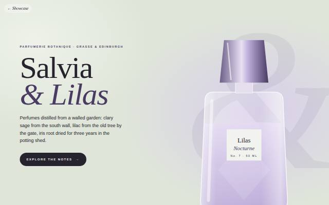
Salvia & LilasBrandsA pale sage and lilac site for a fictional botanical perfume house, with an interactive scent pyramid and dry-down timeline, hand-drawn SVG ingredients and soft glass bottles.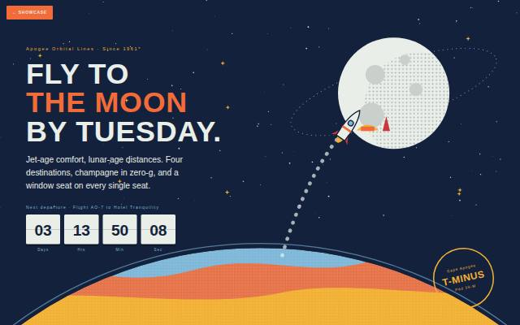
Apogee Orbital LinesBrandsA 1960s travel-poster site for a fictional space tourism line, with a launch countdown, illustrated destination posters and a fare calculator that prints your boarding pass.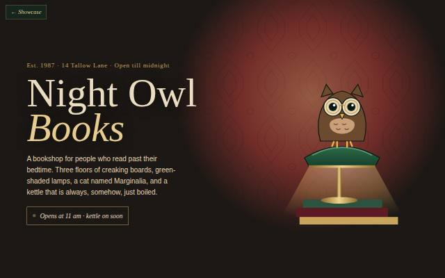
Night Owl BooksBrandsA lamplit oxblood-and-forest-green site for a fictional late-night independent bookshop, with a browseable 3D bookshelf whose spines pull out to reveal covers, staff picks and events.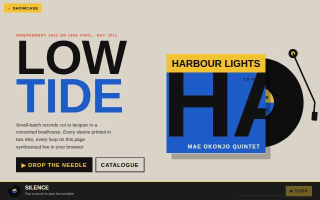
Low Tide RecordsBrandsAn indie jazz vinyl label with generated two-colour album covers and spinning records that each play their own WebAudio-synthesised loop when clicked.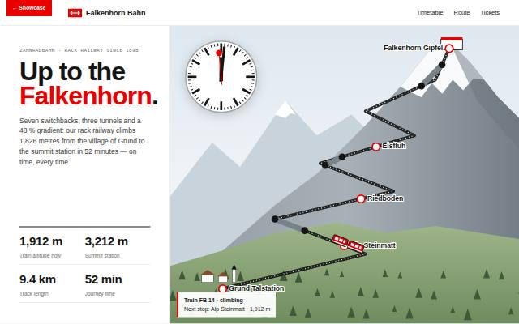
Falkenhorn BahnBrandsA precise red-and-white site for a fictional Swiss mountain railway, with a train climbing a zig-zag mountain track, a live station clock with the stop-to-go second hand, a departures board and route profile.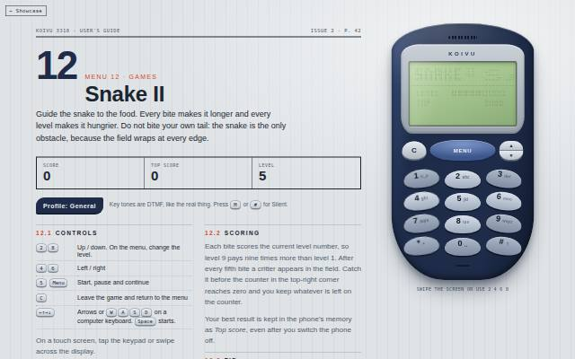
Koivu Snake IIGamesA playable Snake II on a pixel-accurate 84×48 monochrome LCD inside a chunky 2000-era handset, with a working keypad, DTMF key tones and a user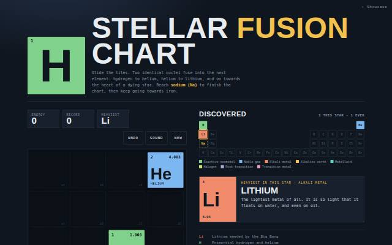
Stellar Fusion ChartGamesA 2048-style sliding puzzle where matching tiles fuse into the next element, from hydrogen towards iron, styled as a periodic wall chart that records every discovery.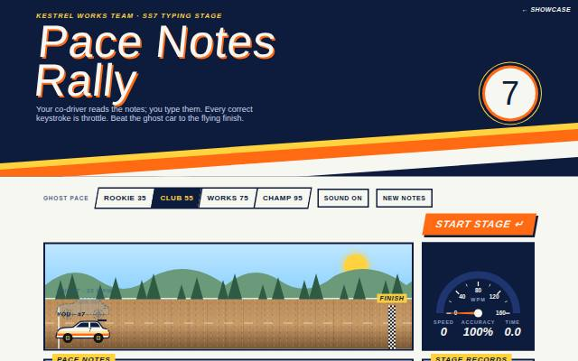
Pace Notes RallyGamesA typing race against a ghost car on a gravel special stage, with 80s rally livery, real quotations as pace notes, a live WPM speedometer, accuracy and stage records.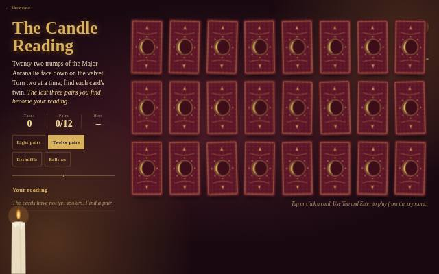
The Candle ReadingGamesA candlelit memory-matching game played with hand-inked Major Arcana cards that flip in 3D, and your last three matches become a past, present and future reading.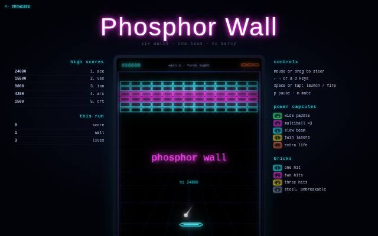
Phosphor WallGamesA glowing vector-arcade Breakout with bloom, line-particle bursts, falling power-ups, lasers, multiball and six hand-built walls, drawn entirely in phosphor strokes on a canvas.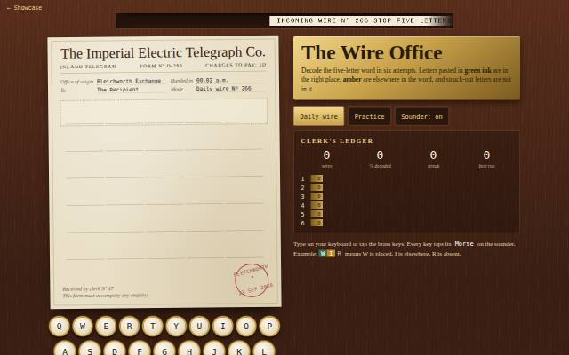
The Wire OfficeGamesA five-letter word game played at a Victorian telegraph counter: guesses print on gummed ticker tape, brass keys tap out Morse, and a new daily wire arrives each day with a practice mode besides.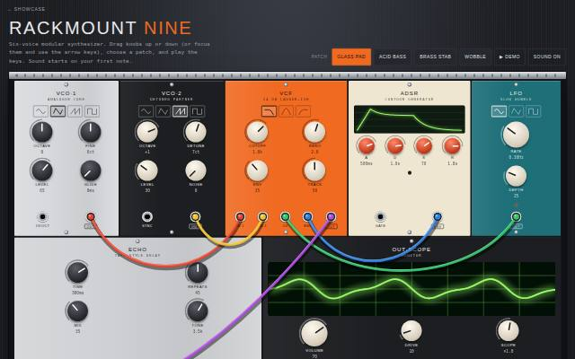
Rackmount NineGamesA playable polyphonic synthesizer in a Eurorack case: two oscillators, filter, ADSR, LFO and delay modules with drag knobs, sagging patch cables, an oscilloscope and a keyboard for mouse, touch or computer keys.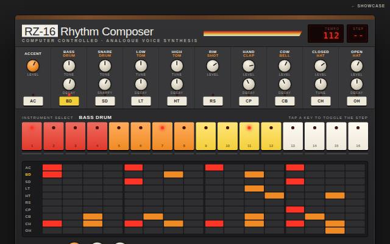
RZ-16 Rhythm ComposerGamesA 16-step analogue-style drum machine with ten voices synthesized live in WebAudio, per-voice tune and decay knobs, tempo, swing, accent and eight pattern memories, styled after the classic eighties rhythm composers.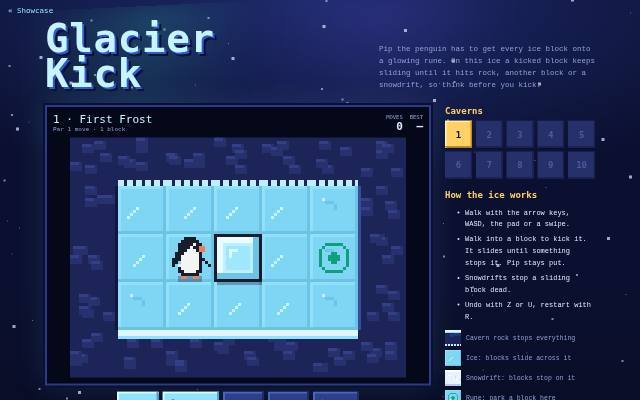
Glacier KickGamesA pixel-art Sokoban on slippery ice: kicked blocks slide until they hit rock, another block or a snowdrift, across ten handcrafted cavern puzzles with undo, par scores and stars.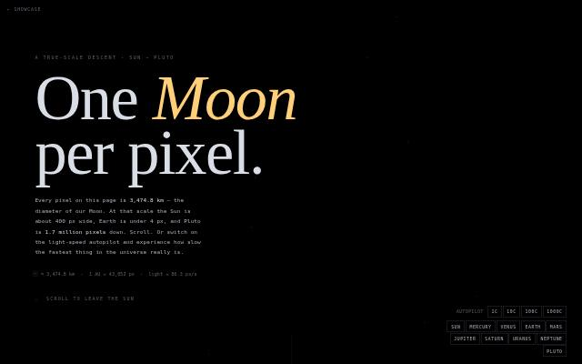
One Moon Per PixelExplainersFall through the solar system at true scale — one pixel equals the Moon